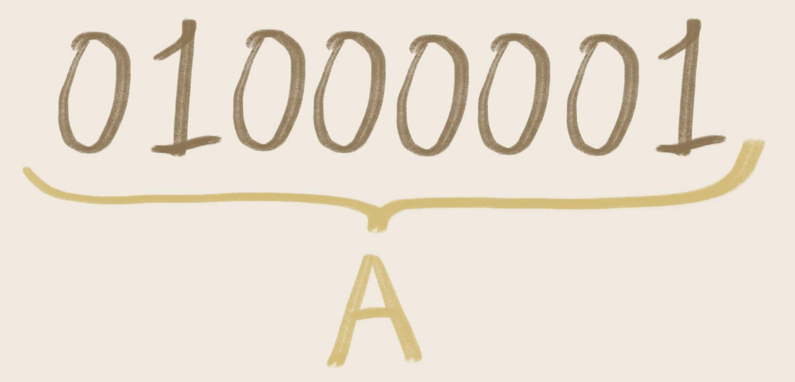

Il Vero, il Falso, l'Indecidibile (1)

Questo il prompt GPT-4o per generare l'immagine (secondo tentativo): === Disegna un uomo di 51 anni, con aspetto giovanile e serio, occhiali e leggera barba imbiancata sul mento, intento a studiare Jung e allo stesso tempo a spiegare la divisione tra VERO, FALSO e INDECIDIBILE, rivolto agli studenti di 17 anni in relazione a come usare la matematica, le scienze, la tecnologia e l'ingegneria per migliorare la vita di tutti gli esseri umani. Dividi la scena in un "VERO", un "FALSO", un "INDECIDIBILE" e tutti che contemplano questi tre elementi concettuali. ===
La nascita del calcolatore elettronico non può essere attribuita unicamente ad una ragione pratica. La sua struttura interna, la sua pseudo-biologia è frutto del tentativo consapevole o inconsapevole di replicare la vita e il pensiero, osservando la natura e se stessi. In questa serie di articoli esploro le analogie, le suggestioni e le singolarità di questa impresa prometeica di una parte dell'umanità, quella curiosa e attenta, quella che nella testa ha solo domande.
---
Le attuali macchine basate sulla calcolo booleano, sul calcolo binario, non contemplano il concetto di indecidibilità. La visione che queste macchine offrono è sempre dicotomica, divisa in ciò che è vero e ciò che è falso. D’altra parte 1 bit può essere o uno (1) oppure zero (0). Quindi l’occhio della pseudo-mente di un calcolatore elettronico è in grado di vedere solo il bianco e il nero, quando si affronta la questione dal punto di vista dei fondamenti fisiologici su cui la presunta vita elettronica può svilupparsi.
Per la macchina, l’indecidibilità può essere derivata solo da una complessa composizione di verità e falsità, ad un livello logico superiore. Proviamo a spiegare meglio che cosa si intende con questa singolare affermazione.
Le attuali macchine elettroniche derivano le proprie rappresentazioni interne (le concepiscono) dall'analisi combinata di una grande serie di interruttori accesi o spenti. Per cui la memoria, lo stato interno della macchina, sono rappresentati da estesi "tappeti" di interruttori di dimensioni microscopiche che, presi a gruppi opportuni, consentono di rappresentare dati e, ad un livello più alto, informazioni. Il brulichio della biologia, alla scala microscopica, rappresentato dalle continue attività di sintesi proteica, di trascrizione e replica, di trasmissione di mediatori biochimici, ha un evidente parallelo, nel mondo elettronico, con l’accendersi e spegnersi di questi innumerevoli interruttori. E stiamo trascurando quei comportamenti comuni, nelle stratificazione più basse, rappresentati dal muoversi degli elettroni e dall’assunzione di valori specifici di tensione "alto" (che rappresenta l’uno) oppure "basso" (che rappresenta lo zero). Si noti, per completezza, che alcune codifiche lavorano sulle transizioni alto -> basso (1), basso -> alto (0) o viceversa.

Nella foto, un ingrandimento al microscopio elettronico, di un chip di memoria. I computer ne contengono miliardi, come le cellule di un organismo. (Immagine di NISE Network, 2016).
I gruppi di interruttori che, d’ora in avanti, chiameremo "gruppi o raggruppamenti di bit" (interruttore ≡ bit), a loro volta possono essere ulteriormente raggruppati, per cui abbiamo una gerarchia a due livelli, a tre livelli, a quattro livelli, ecc. in cui otteniamo "gruppi di gruppi di bit", "gruppi di gruppi di gruppi di bit", "gruppi di gruppi di gruppi di gruppi di bit" e così via. A causa dell’ordine, della sequenza, del significato attribuito ad ogni gruppo elementare di bit, questi danno luogo a parole e frasi che, a loro volta, assumono un ulteriore significato per i livelli di elaborazione superiore. La componente che possiede la capacità di attribuire significati a questi raggruppamenti è sempre un livello agentivo che contribuisce alla costituzione dell’agente intero. L’attribuzione di significato è del tutto arbitraria, è stabilita da colui che ha scritto (che ha codificato) lo strato di agentività.

Nella foto, il simbolo A è ottenuto osservando 8 interruttori consecutivi da sinistra verso destra: spento, acceso, spento, spento, spento, spento, spento, acceso.
Ma c’è di più: i raggruppamenti di bit e i raggruppamenti di raggruppamenti di bit hanno anche un’altra funzione, cioè non rappresentano unicamente dei dati, delle informazioni ma, addirittura, rappresentano degli atti, delle azioni, che le macchine riescono, in virtù della loro struttura a priori, ad eseguire. Dunque, si tratta di istruzioni che, iniettate all’interno di macchine del tutto passive, rendono queste in grado di agire, cioè le trasformano in entità agentive. Ciò che effettivamente sconvolge, in questa aliena struttura pseudo-biologica (che ovviamente di biologico non ha nulla), è il fatto che le sequenze di bit producono effetti di natura elettrica ed elettronica su altrettanti interruttori in qualche modo fisicamente collegati direttamente o indirettamente. Il risultato dell’esecuzione di un’istruzione consiste in ondate di accensioni e spegnimenti ovunque nella struttura complessiva della macchina.
Possiamo già cominciare a intuire che una siffatta struttura produca, in condizioni nominali di funzionamento, un comportamento deterministico e, se vogliamo, razionalmente determinato, in virtù del fatto che gli effetti dell’esecuzione delle istruzioni e dell'elaborazione dei dati sono il frutto dell’applicazione di ben precise regole di natura numerica e allo stesso tempo logica, a vari livelli di astrazione.
Esiste anche una particolare assunzione che fa il progettista in merito alla convenzione per cui un interruttore acceso indica vero, e un interruttore spento indica falso.
Nell’ambito della interiorità materiale di un calcolatore elettronico, ciò che è vero non è il vero del reale o il vero del mentale. Esso è semplicemente un valore di tensione (per intenderci, un potenziale elettrico) specifico all’interno di un componente, di dimensioni microscopiche, nella sua struttura pseudo-biologica. D’altra parte non c’è scelta: ciò che non è acceso è spento e quindi ciò che non è uno è zero.
Su queste basi è necessario allora definire e poi formalizzare il concetto di indecidibilità. Ma purtroppo non possiamo ancora. Infatti, dobbiamo aggiungere un ulteriore livello di complicazione: un sistema booleano pseudo-biologico, come può essere un calcolatore elettronico, vede il falso come il non-vero e quindi, se non esistesse il vero, non esisterebbe neanche il falso. Cioè, le due entità, sulla base di un ordine di precedenza, si definiscono vicendevolmente. In questo fondamentale dualismo che, a mio avviso, è un retaggio culturale occidentale, ma di origini orientali (ne possiamo discutere ampiamente in qualche prossimo articolo), l’indecidibilità occupa un posto a sé, un posto di primo piano...
Fornisco qui alcuni spunti di riflessione che intendo sviluppare nei prossimi articoli: (1) Quanto si discosta il pensare artificiale dal pensare naturale se riflettiamo in termini di struttura, modalità di pensiero, modalità di giudizio, modalità di decisione, atteggiamento nei confronti del tempo, consapevolezza del tempo e del non-tempo. (2) In una possibile rappresentazione grafica, dove collocheremmo l’indecidibile? (3) Abbiamo bisogno dell’indecidibilità? Probabilmente l’indecidibilità è una entità mentale prevalentemente umana. (4) Quali sono le differenze nel comportamento tra un calcolatore che prende una decisione e un umano che prende una decisione? Cosa guida l’umano nel fare una scelta sia pur razionale?